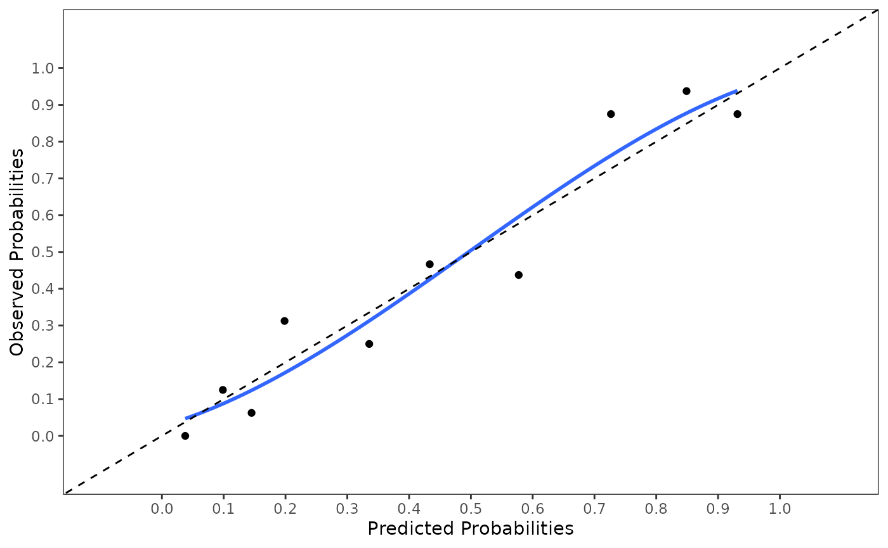

vignettes/Pool_Model_Performance.Rmd
Pool_Model_Performance.RmdThe psfmi package includes the function
pool_performance, to pool the performance measures of
logistic and Cox regression models. This vignette show you how to use
this function.
The performance of a logistic regression model across multiply imputed datasets can be obtained as follows.
perf <- pool_performance(data=lbpmilr, nimp=5, impvar="Impnr",
formula = Chronic ~ Gender + Pain + Tampascale +
Smoking + Function + Radiation + Age +
Duration + BMI,
cal.plot=TRUE, plot.method="mean",
groups_cal=10, model_type="binomial")
perf
#> $ROC_pooled
#> 95% Low C-statistic 95% Up
#> C-statistic (logit) 0.7878 0.8626 0.9139
#>
#> $coef_pooled
#> (Intercept) Gender Pain Tampascale Smoking Function
#> -5.951990403 -0.300998171 0.533421791 0.104519460 0.168974909 -0.063384729
#> Radiation Age Duration BMI
#> 0.256421438 -0.014809697 -0.001136425 0.006379084
#>
#> $R2_pooled
#> [1] 0.4882147
#>
#> $Brier_Scaled_pooled
#> [1] 0.3946362
#>
#> $nimp
#> [1] 5
#>
#> $HLtest_pooled
#> F_value P(>F) df1 df2
#> [1,] 1.090127 0.3779371 8 85.96895
#>
#> $model_type
#> [1] "binomial"For a Cox regression model the following code can be used.
perf <- pool_performance(data=lbpmicox, nimp=5, impvar="Impnr",
formula = Surv(Time, Status) ~ Duration + Pain + Tampascale +
factor(Expect_cat) + Function + Radiation + Age ,
cal.plot=FALSE, model_type="survival")
perf
#> $concordance_pooled
#> 95% Low C-statistic 95% Up
#> C-statistic (logit) 0.5733 0.621 0.6664
#>
#> $coef_pooled
#> Duration Pain Tampascale factor(Expect_cat)2
#> -0.007680610 -0.085077440 -0.018125989 0.306105694
#> factor(Expect_cat)3 Function Radiation Age
#> 0.269403151 0.038106572 -0.037816020 -0.008903958
#>
#> $R2_pooled
#> [1] 0.09049936
#>
#> $nimp
#> [1] 5
#>
#> $model_type
#> [1] "survival"